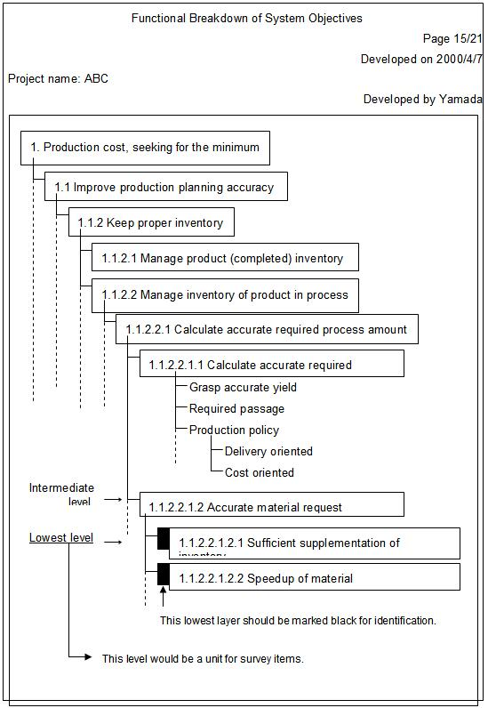
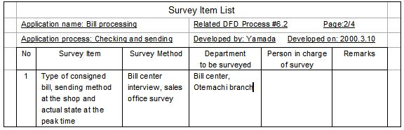
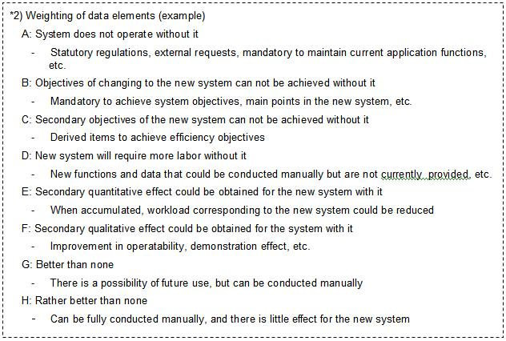
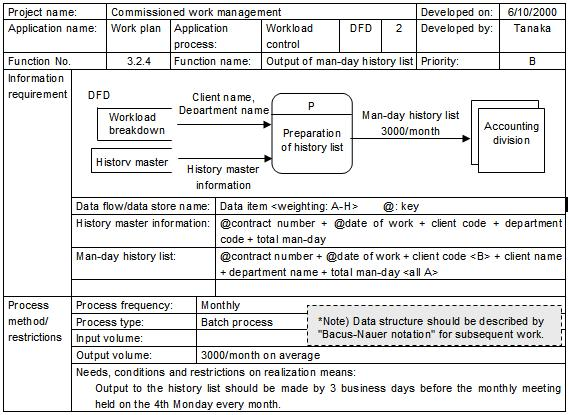

1 Description
Requirements definition is to define the ultimate purpose of the new system, in other words, to make clear ‘what’ the
new system should do.
Defining requirements is a crucial, however, challenging and not easy work because of:
-
Difficulties in realizing a conception into tangible software/system product
One of the factors is that what the user really wants the system to do may not be communicated properly to the
requirements analyst. Users are not always aware of needs or problems of the target application. Users’ senses of
crisis are generally vague and abstract. Those obscure requests toward a new system are transmitted to the analyst
without being enough analyzed or organized by users. On the other hand, requirements analysts do not usually know the
user’s environment and application details. Those differences of the both parties’ standpoint cause misunderstandings
of requirements.
-
Necessity of reconciling clashes of project stakeholders’ requirements
Very often different stakeholders have unconsciously adapted different assumptions about what they need and want. These
different interests and requirements are bound to conflict. For example:
The Users want
- The features they need to do what they want to do.
- Ease in converting legacy systems, converting data, and retraining employees.
- Dependability, usability, performance, security, scalability, and others.
The Developer wants
- Stable requirements.
- To optimize and reuse software, tools, and platforms.
- To build what can be reused in the future.
The Sponsor wants
- A solid business case with assurances of a strong return on investment.
- A competitive edge for the sponsor’s product line.
- Development visibility and control.
- Without a consensus of their requirements, successful system will not be expected in the end.
Requirements Survey is conducted to understand current problems as potential specific requirements to be
solved in new system by asking users appropriate questions, gathering necessary information, and finding the true problems,
needs and goals of users.
During survey, analysis of application (organization/human activity) should be prioritized, because the user’s
objectives are not to develop system or software but to improve efficiency and quality of the application that they use. To
proceed an interview smoothly, it is necessary to fully understand the user’s application prior to the survey.
How should survey be prepared?
-
Fully understand the target application
If developers are not familiar with the target application, study it by modeling the current application system. DFD
application models are useful in this process. (This paper describes survey technique applying DFD application models).
It is essential to be able to comprehend general terms about the application including ones unique to that environment.
Developing a glossary is effective.
-
Break down the system objectives
Work with user representatives to break down the system objectives sufficiently to understand the specific requirements
for a new system. Specific requirements are also documented with data requirements. If problems are found in developing
models of the current system, document them as a part of those models. The identified problems are another source of
information to understand the specific requirements for a new system. Use topdown and bottom-up approaches as follows:
Topdown approach
Break down the system objectives as finely as possible, and define the functions necessary for implementing them.
Break the functions down to the point where a specific image of the new system can be obtained. Summarize the results in
the functional breakdown of system objectives*1), estimate the level and scope of the system, predict effects, and
determine the focused areas to be surveyed.
Bottom-up approach
Study the problem list and current application flow, and extract the current problem areas. Study solution proposals,
determine the level and scope of the new system, and predict effects of the new system.
2 Examples
*1) [ Example of functional breakdown of system objectives ]

Who should be surveyed?
Interviewing the wrong people is one of the most common mistakes in survey. It is possible to miss the opportunity of
talking to the unknown user who really does know what the requirements are. Choose the right people from the right
department for survey. Usually, users can be categorized into three types: operational users, supervisory users, and
executive users. Each type of users has the following characteristics:
Operational users
Operational users are the operational and administrative people most likely to have the most day-to-day contact with
the new system. They are very much concerned with the functions that the system will perform, especially human
interface issues, which are the crucial to the success of the system. At the same time, they tend to have a “local”
view of the system; they tend to be knowledgeable about the specific job that they do, but they often are unfamiliar
with the “global view”. Abstract discussions about “functions” and “data elements” may be difficult for operational
users; hence, it is necessary to talk with the user exclusively in familiar terms.
Supervisory users
Supervisory users usually manage a group of operational users and are responsible for their performance. They are
generally familiar with the work done by their operational subordinates and sympathize with their needs, concerns and
perspectives. Supervisory users are often driven by budget considerations, hence they are most interested in, for
example, whether a new system will increase the volume of work done and reduce the cost of processing transactions.
Executive users
Executive users are generally two or three levels above the action associated with the project and are more likely to
serve as the funding authority for project requests that originate at lower levels in the organization. They are
typically more concerned with strategic issues and long-term profit/loss. Hence, they are typically less concerned with
operational issues.
Keep in mind that these three types of users have different perspectives, different interests and priorities, and often
different backgrounds. Taking their characteristics into account, select appropriate people for each survey.
Requirements Survey Process
Here describes the steps for conducting a requirements survey.
-
Identify Requirements Survey Items
Identify survey areas by analyzing application process refinement and system objectives until tangible needs for the
new system are fully understood.
-
Classify and organize breakdown objectives and record them in the survey item list.
-
Utilize DFD-application model effectively during the examination (rough sketch is sufficient at first).
[ Example of items in the Survey Item List ]

2. Plan Requirements Survey
Determine survey methods, survey areas, and survey schedule for a smooth survey, and develop a survey plan. Based on
the survey plan, organize a survey team.
-
Determine survey methods and prepare survey guides.
-
Questionnaire
-
Interview by department/individual
-
User workshops, brainstorming sessions, etc.
-
Organize a survey item list and develop a survey sheet.
-
Prepare for prototyping, if necessary.
-
Select survey departments and areas and organize a survey team.
-
Make a survey schedule.
-
Have the survey plan reviewed together with users and communicate the results to the participants.
3. Survey User Requirements
Conduct a survey according to the survey plan and collect needs for the new system at the data element level.
-
Conduct a survey according to the survey plan and collect needs for the new system at the data element level.
Needs for the new system includes functions and priority to be added or improved and information (data elements) to be
newly required or improved and weighting*2), needs for system resources, number of data generated, generation frequency
and expected growth, trigger for process, etc.
-
Utilize current DFD physical model/DFD current logical model (being developed) for the survey.
-
When prototyping is selected for extracting needs or checking the user interface requirements, prioritize required
functions and data elements to be displayed in this process.

4. Fill Out System Needs Analysis Form
Describe new functions and processes to be improved and data on the "System Needs Analysis Form" using DFD-application
model, and record the priority of each of the needs.
-
Describe new functions or processes to be improved using the DFD-application model and enter the necessary data
elements.
-
As for physical requirements such as process methods and restrictions, frequency and number of data generated
should be entered in addition to the process method requirements. Special conditions or restrictions to start
(trigger) or to choose the process, if any, should also be entered.
-
Enter priority/weighting for each required function and data element.
-
Make an additional survey when ambiguity or unclear points appear during the organization/description process.
[ Example of System Needs Analysis Form ]

5. Perform System Requirements Analysis
Collect system needs, while confirming that each of the needs is in accordance with the desired system objectives and
application scope. The results, including priority, should be confirmed with user departments/related departments.
-
Relate each of the needs to the DFD current physical model/DFD current logical model and confirm that there is no
deviation from the desired system objectives and application scope.
-
Consolidate the survey results according to a functional breakdown of system objectives and organize the system
needs.
-
Obtain agreement from surveyed and related departments for the system needs and their priority.
Key considerations in interviewing
-
More than two persons should participate in the interview to ensure that all comments are heard and notes are taken
properly.
-
The interview results should be itemized and entered in the survey sheet and should not be processed.
-
Feed back the interview results to survey members on the same day so as to prevent duplication of questions.
-
It is preferable that interviewers use blank copy of the "System Needs Analysis Form" for taking notes so as to ask
all the necessary questions.
Related Techniques
Other related techniques to survey user requirements are stated below:
-
JRP (Joint Requirements Planning)
JRP is a workshop held with selected end users during requirements planning phase for the purpose of bring out
requirements from user departments. JRP is intended to determine requirements in contrast with JAD, which is
intended to design systems while developing prototypes. An expert called ‘workshop leader’ proceeds a meeting with
strong leadership in charge of drawing user needs and organizing the results structurally. From user departments,
members with the decisive power, including an ‘executive owner’, must participate in the workshop.
JPR enables:
-
To analyze and clarify goals, problems, success factors and strategy of the new system with top level
users in planning.
-
To obtain accurate system requirements rapidly in the early stage.
-
JAD (Joint Application Design)
JAD is a workshop held to design a high quality system from user’s point of view in a short period. End users who
participate in JAD must have enough knowledge and decisive power of conducting detailed design. In order to improve
quality of outputs designed in a JAD workshop, carefully select participants’ skills, tool performance and
prototyping methods.
When requirements of end users are defined in advance, it is possible to integrate JRP and JAD into a same
workshop. In that case, the workshop period should be within seven weeks at the longest. When only JAD workshop is
to be conducted, it should be within two or three weeks.
JAD enables:
-
-
To considerably reduce time required for settling system specifications and designing.
-
To improve productivity during implementation.
-
To integrate needs from various departments.
-
To make users satisfied with deliverables, as users themselves join in designing system with strong
interests.
Prototyping is a system development approach utilizing “prototypes” as a system or a part of the system in the
early stage of implementation. It is intended for early definition of system requirements and early verification of
system design. Its characteristics are that users are involved deeply in the implementation process and that
prototyping is iterated several times until requirements and specifications, or basis of the entire system are
determined.
Prototyping enables:
-
To decrease misunderstandings and mistakes of requirements specifications caused by communication gaps as
users participate in a project from the initial stage.
-
To define the details from the early stage which users themselves did not notice by actually running the
prototypes.
-
To confirm user acceptance from the early period.
-
To find problems and errors in the early period and reduce defect removal cost during implementation and
maintenance cost.
-
To cut down documentation cost by using prototypes as specifications.
-
To estimate implementation cost early and accurately as specifications are defined in the early stage.
-
To reduce overall implementation period considerably.
3 References
-
Edward Yourdon, Modern Structured Analysis, Prentice-Hall, Inc., 1989.
-
James Martin, Rapid Application Development, Macmillan Publishing Co., 1991.
-
Nunokawa, Sakakibara, Ohshima & Ohkubo, Application Development Techniques, Rick Telelcom, Inc., 1997.
-
Barry Boehm & Dan Port, When Models Collide: Lessons From Software System Analysis, IEEE IT Professional,
vol.1, no.1, 1999.
|